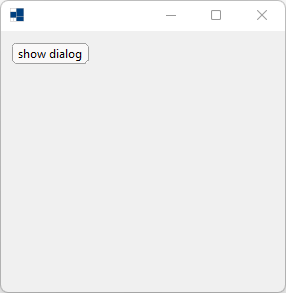
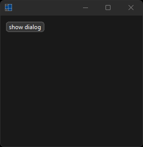
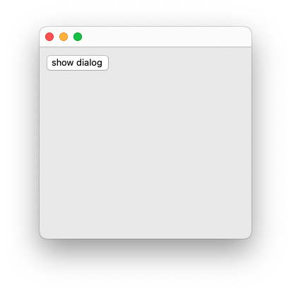
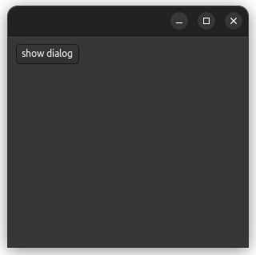

|
xtd
0.2.0
|
Loading...
Searching...
No Matches
application_events.cpp
demonstrates the use of application events.
- Windows
- 

- macOS
- 

- Gnome


#define TRACE
#include <xtd/diagnostics/trace>
#include <xtd/forms/application>
#include <xtd/forms/debug_form>
#include <xtd/forms/form>
using namespace xtd;
using namespace xtd::diagnostics;
using namespace xtd::forms;
auto main()->int {
form form1;
button button1;
button1.auto_size(true);
button1.location({10, 10});
button1.text("show dialog");
button1.parent(form1);
button1.click += [] {
form dialog;
dialog.client_size({200, 100});
dialog.show_dialog();
};
application::application_exit += [] {
trace::write_line("Application exit");
};
application::enter_thread_modal += [] {
trace::write_line("Enter thread modal");
};
application::idle += [] {
static auto cpt = 0;
trace::write_line(ustring::format("Idle [{}]...", ++cpt));
};
application::leave_thread_modal += [] {
trace::write_line("Leave thread modal");
};
application::thread_exit += [] {
trace::write_line("Thread exit");
};
application::run(form1);
}
virtual const xtd::ustring & text() const noexcept
Gets the text associated with this control.
virtual const drawing::size & client_size() const noexcept
Gets the height and width of the client area of the control.
Represents a form that displays debug form. This class cannot be inherited.
Definition debug_form.h:34
Represents a window or dialog box that makes up an application's user interface.
Definition form.h:52
virtual forms::dialog_result show_dialog()
Shows the form as a modal dialog box.
The xtd::diagnostics namespace provides classes that allow you to interact with system processes,...
Definition assert_dialog_result.h:10
The xtd::forms namespace contains classes for creating Windows-based applications that take full adva...
Definition xtd_about_box.h:12
The xtd namespace contains all fundamental classes to access Hardware, Os, System,...
Definition xtd_about_box.h:10
Generated on Fri Mar 1 2024 07:55:25 for xtd by Gammasoft. All rights reserved.